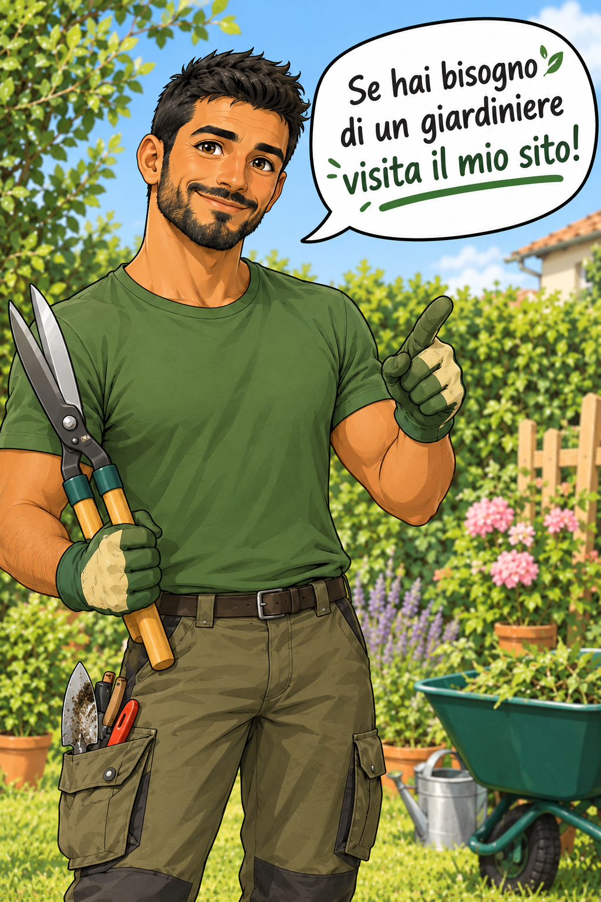

Dallo sviluppo del progetto alla scelta delle piante, creando soluzioni personalizzate che rispondano alle esigenze di ogni cliente.
Potatura, cura del prato, trattamenti per le piante e tutto il necessario per mantenere il giardino in perfetta forma durante tutto l'anno.
Interventi di recupero e valorizzazione di giardini e spazi verdi con un'attenzione particolare alla conservazione della loro bellezza originale.
Suggerimenti su piante adatte al clima, al terreno e all'esposizione solare del tuo giardino.
Anni di esperienza sul campo, lavorando su progetti di diversa tipologia e dimensione.
La mia passione per il giardinaggio si riflette in ogni lavoro che faccio.
Puntualità e precisione sono i miei punti di forza.
Contattami per un primo incontro e scopri come posso aiutarti a valorizzare il tuo spazio verde!